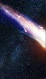

COMETA
Cometas são como bolas de neve sujas do espaço, viajando pelo sistema solar com suas longas caudas brilhantes! Eles são feitos de gelo, poeira e pequenas rochas, e se tornam espetaculares quando se aproximam do Sol. O calor do Sol faz com que o gelo no núcleo do cometa se vaporize, criando uma cauda impressionante que pode se estender por milhões de quilômetros. Cometas como o famoso Halley passam pela Terra em intervalos regulares, oferecendo um show cósmico que nos lembra das maravilhas do universo!
Cometas são viajantes cósmicos fascinantes, trazendo consigo histórias antigas do nosso sistema solar. Feitos de gelo e rocha, eles ganham vida quando se aproximam do Sol, formando caudas brilhantes que podem iluminar o céu noturno. A cauda de um cometa é como uma assinatura espetacular, que se estende à medida que o núcleo de gelo vaporiza. Cometas são um lembrete de como o universo é cheio de surpresas, e observar um deles é como assistir a um show especial no espaço!
Material de Estudo